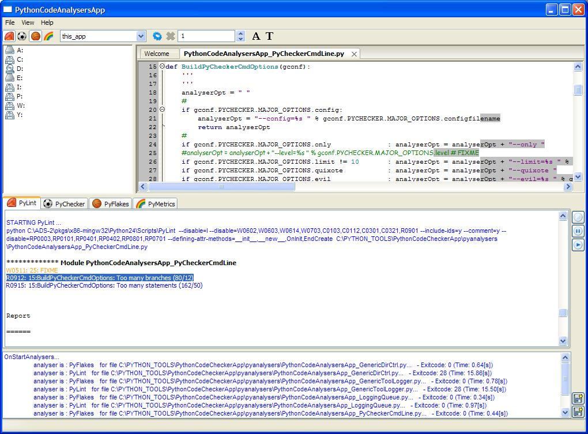
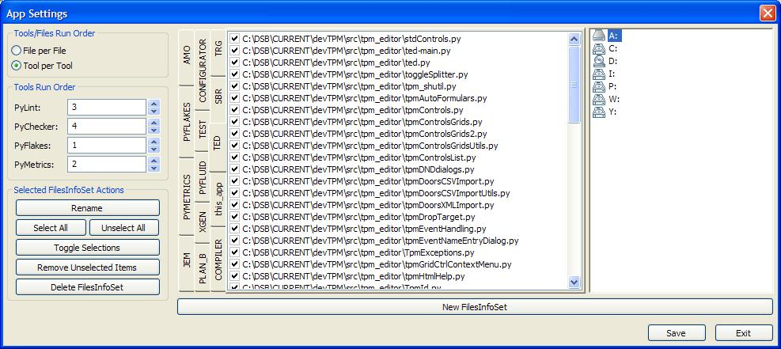
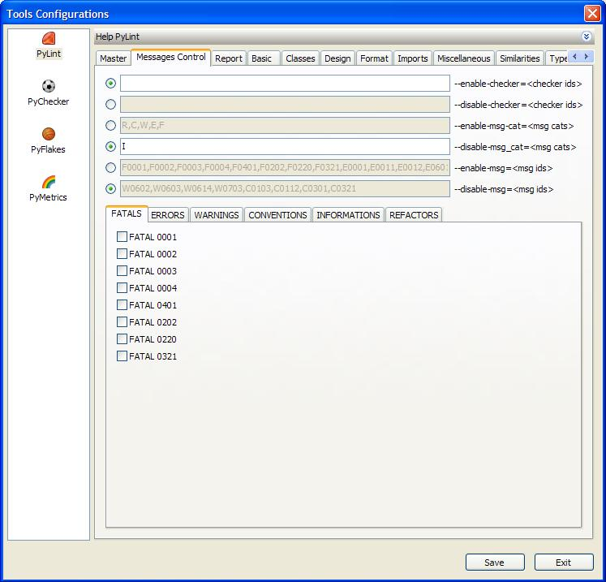

PythonCodeAnalysersApp is an GUI front-end for 5 python code analysers:
You have to install these packages if you want that this application does something useful.
How can this Application help you? Well, as a Python developper (what you should be if you bought this app), you already know that Python is an interpreted langage. This means, among others, that there is no "compiler" to inform you about syntax errors in the code. You "discover" yours errors when the code runs and makes something wrong. Of course, today there are editors which can help you avoiding syntax errors, informing you in "realtime" about all kinds of errors. That's great!
The goal of PythonCodeAnalysersApp is different. With this app, you can check you code "off-line". "So what?" could you say... "Let's just use PyLint or PyFlakes for this purpose!". You're right, but with this app you've got a MAJOR avantage above using these tools from the command line. As the options for the tools are displayed in a GUI, you've got a better overview of all options (did you ever get an overview of all possible settings for PyLint or PyChecker for example). The output of the tools are also displayed in a fancy, readable manner. It is possible to quickly edit and fix the errors/warnings by clicking on the error/warning line: the related file will open at the right line in the application itself. And the output of the processes can be saved in text or html to create reports.
Finally, you can also save a lot of time (never complained how slow PyLint is?) if your computer has a multicores CPU: it is possible to set in the GUI how many processes can be run in parrallel. When using PyLint from the command line with many input files, the files are processed one after the other. With PythonCodeAnalysersApp, the files are processed then in parrallel (number of simultaneous process is up to you) and the output is of course serialized right).
****** Most important, experience shows, developers really check their code, when analysers are used (and their output are displayed) in a fancy GUI. ******
Let's have a view of the main application window.
The main window is divided in four areas:
First you define some "FilesInfoSet" ie a list of files that you wish to check by clicking the in the toolbar. You can have as many "FilesInfoSet" as you wish. Inside a FileInfoSet, you can always activate or deactivate ("filter") the files that you do not want to check (too long processing time for example...).

You select your "active" FileInfoSet from the application toolbar. The list of all FileInfoSet is available in the toolbar "choice" control.
Then you select which "analysers" you want to use, by clicking the "toggle" buttons in the toolbar:
You can of course select/deselect more than one analyser.
After that, you can configure the "analysers". Here is the UI a great help, as there is plenty of configuration options, especially for PyLint and PyChecker. For this purpose, open the "Tools Configuration" dialog by pessing the button in the toolbar.

A dialog pops-up, where all options for PyLint, PyFlakes and PyMetrics are configurable. Of course, after a session, your configuration for the analysers will be save and reloaded when a new session is started.
You can now start the analysers. Just press the "run" button in the toolbar. The output of the analysers will be logged in the "logger" windows. The fact that the
messages are displayed in colors make them quite readable (sounds trivial but really helpful). You can stop the job(s)
by clicking the "cancel" button  in the toolbar.
in the toolbar.
Double clicking in the "processes window" on a line jumps to the related process in the "processes output window".
Now, to my opinion, the "great" thing: you can double-click in the loggers on some errors/warnings messages: the related file will open at the right line in the editor window, so that you're ready to fix the error/warning (seems trivial too, but this make you win a lot of time, and is just fun). Finally you can also save the output -in text or in html- so that you get nice reports.
By the way, have you noticed in the toolbar the "spinner"? With it, you can set the number of processes that will run in parrallel. Use it if you have a multicore computer!
To open the Settings dialog, click on the Toolbar button in the toolbar.
you can schedule the order in which the files are processed:
If you have selected more than one tool, the process order will be
The order of the files which are processed is given by their order in the FileInfoSet. The order of the tools is given by the "Tool Run Order" setting.
If you have selected more than one file, the process order will bel
The order of the files which are processed is given by their order in the FileInfoSet. The order of the tools is given by the "Tool Run Order" setting.
Files to be processed are bundled in an "FileInfoSet". You can edit (add, remove and select/deselect) files in the info set. You can also create new infosets or delete existing ones.
To add a file to a given FileInfoSet, browse the FileSystem tree, select a file and press the "+" taste. To delete a file given in a FileInfoSet, utilize the context menu on this file and select the commando "Delete Selection(s)".
Sort items alphabetically
To open the Tools-Configuration dialog, click on the Toolbar button .
ToDo
No need to configure yet!
ToDo
In the python folder, the following files must be present:
pylintpyflakespymetricsCheck also that the scripts are installed contain the following.
File "pylint" has to be of the form:
#!/usr/bin/python
# EASY-INSTALL-ENTRY-SCRIPT: 'pylint==1.1.0','console_scripts','pylint'
__requires__ = 'pylint==1.1.0'
import sys
from pkg_resources import load_entry_point
if __name__ == '__main__':
sys.exit(
load_entry_point('pylint==1.1.0', 'console_scripts', 'pylint')()
)
File "pyflakes" has to be of the form:
#!/usr/bin/python from pyflakes import api api.main()
File "pymetrics" has to be of the form:
#!/usr/bin/python import PyMetrics.PyMetrics as pm import sys pm.main () sys.exit (0)